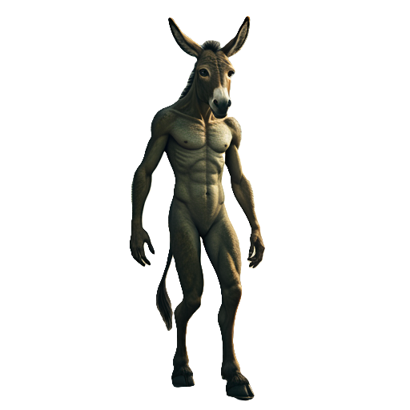

<body style='background-size:100% 100%;background-image:url(lanceer.jpg)'>

<iframe src='wavesobinww.html' border=0 frameborder=0  style='height:102%;width:102%;position:fixed;top:-1%;left:-1%;' id='iff'>
</iframe>

<div id='scene'></div>
<script>


</script>

<script>
var onte=0;
var ted=0;
var pa=document.getElementById('paai');
function sllow(){
pa.style.transform="rotateY("+(onte*10)+"deg)";
pa.style.top=(20-(onte%90))+"%";

pa.style.opacity=(100-(10+(onte%45)))/200;

onte+=4;


setTimeout("sllow()", 100);
}
sllow();
</script>


